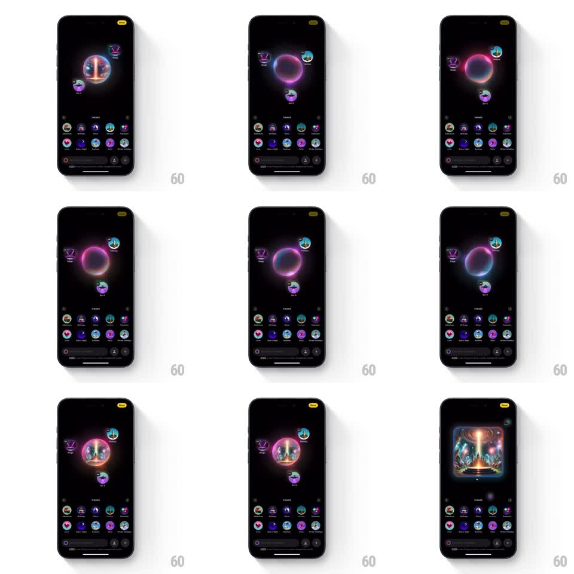

Media
Frame-by-frame

Rebuild this interaction 1:1: Apple Image Playground's generation sequence - orbiting theme bubbles spiral inward and merge into a glowing iridescent sphere, which churns and then morphs into the finished image card.

Rebuild this interaction 1:1: Apple Image Playground's generation sequence - orbiting theme bubbles spiral inward and merge into a glowing iridescent sphere, which churns and then morphs into the finished image card. ## Integration Integration: stack-agnostic spec - springs given as stiffness/damping, timed motions as duration + curve; map every value to your framework and animation library of choice. ## Scene The dark Image Playground canvas: theme bubbles (small round concept chips like Costumes and text labels) float around the center, with a suggestion grid and prompt bar at the bottom. On generate, the chosen bubbles spiral into the center and fuse into a swirling iridescent sphere (pink, purple, teal hues). The sphere pulses and churns while generating, then bursts softly into the final generated image card with rounded corners. ## Motion spec Pattern: bubble merge into generation sphere into image reveal, ~4s total. - The selected bubbles leave their positions and spiral inward (600ms, ease-in, arcing paths), shrinking as they approach center and dissolving into light. - They fuse into a glowing sphere (spring stiffness 260 damping 18 on formation): an iridescent orb with slowly swirling surface colors (3s hue drift loop) and a soft outer bloom that pulses (1.5s period). - The sphere churns - internal light structures roll and shift - for the generation wait. - On completion, the sphere expands slightly, flashes bright (150ms), and resolves into the final image card: the generated artwork scales from the sphere's center into a rounded-rect card (spring stiffness 280 damping 22), page dots appearing beneath. ## Calibration - The sphere is glossy and volumetric - rim light, internal swirl, bloom - never a flat gradient circle. - The image resolves from within the sphere, keeping the same center point throughout. ## Reduced motion Bubbles fade to center; image fades in. ## Don't miss - Only the selected bubbles merge; unchosen suggestions stay parked. - The bottom suggestion grid and prompt bar remain in place through the whole sequence.